EQUIPAMIENTO
Cómo elegir tu primera mochila de trail
Capacidad, ajuste y peso: tres decisiones sencillas para disfrutar de cada recorrido con confianza.

EQUIPAMIENTO
Capacidad, ajuste y peso: tres decisiones sencillas para disfrutar de cada recorrido con confianza.
Elegir tu primera mochila de senderismo es uno de los pasos más importantes para comenzar a explorar la naturaleza. No se trata únicamente de encontrar un diseño atractivo, sino de seleccionar una mochila que se adapte a tu cuerpo, al tipo de recorrido y a la cantidad de equipo que necesitas transportar. Una elección adecuada puede marcar la diferencia entre disfrutar de una caminata o terminar con molestias en la espalda y los hombros.
PASO 1
Elegir tu primera mochila de senderismo es uno de los pasos más importantes para comenzar a explorar la naturaleza. No se trata únicamente de encontrar un diseño atractivo, sino de seleccionar mochila que se adapte a tu cuerpo, al tipo de recorrido y a la cantidad de equipo que necesitas transportar. Una elección adecuada puede marcar la diferencia entre disfrutar de una caminata o terminar con molestias en la espalda y los hombros.
Hasta 15 L para trail running, de 15 a 30 L para senderismo de un día y más de 30 L para travesías.

PASO 2
La comodidad también es fundamental. Busca una mochila con correas ajustables, respaldo acolchado y materiales resistentes. Si vas a transportar mayor peso, contar con un cinturón lumbar y una correa de pecho puede ayudarte a distribuir mejor la carga. Antes de comprar, procura probar la mochila con algo de peso para comprobar que se ajuste correctamente a tu espalda y permita moverte con libertad.
Los tirantes no deben presionar el pecho y el cinturón tiene que apoyarse sobre las caderas, no sobre la cintura.

La mejor mochila es la que olvidas que llevas puesta.
Equipo Rutta
PASO 3
Finalmente, recuerda que la mejor mochila no siempre es la más grande ni la más costosa, sino la que responde a tus necesidades. Considera la duración de tus recorridos, el clima y tu nivel de experiencia antes de decidir. En Rutta queremos ayudarte a encontrar equipamiento que te permita comenzar tus aventuras con comodidad, confianza y preparación.


RESUMEN RÁPIDO
Elige la capacidad según los días de tu ruta.
Pruébala con carga y revisa caderas y hombros.
Prefiere telas ligeras, impermeables y costuras firmes.

No existe la mochila perfecta para todos, pero sí la ideal para tu próxima salida. Define tu ruta, prueba el ajuste y elige con calma.
Ver mochilas
ESCRITO POR
Compartimos guías y recomendaciones para que dar tus primeros pasos en el trail sea más sencillo.
SIGUE LEYENDO
Explora otros artículos para preparar tu próxima aventura.
Ver todo el blog